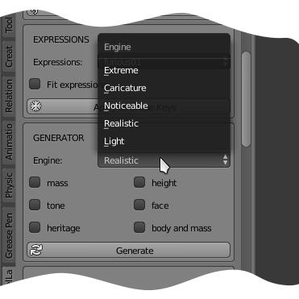

The quasi-random generator
The other way to create characters is using the quasi-random generator, that it's not entirely random, but partially controlled by some parameters.
The engine includes some new algorithms, where the most interesting is probably the "heritage" option, that automatically creates variations of character preserving the prevalent "dna" characteristics.
Another fundamental parameter is the scale of the randomization.
It goes from "Light" level to "Extreme" level, through five degrees of intensity.
Using the first two levels, the generated characters will be realistic and plausible in the range of human variations. using other parameters the results will tend to be unrealistic and grotesque.


The main feature that makes the quasi-random generator a very powerful modelling tool is that it can be used in combination with the other ManuelbastioniLAB tools. For example, you can select a phenotype in the first ManuelbastioniLAB section, then go in the generator, enable the heritage and create many characters from the same family.

The image above shows five characters created as derivation with heritage from the standard North European.
The result without enabling the heritage option is shown in the image below.

Other constrains are more intuitive: during the generation it's possible to preserve the mass, the muscles, the height and the face of the characters.
This is very useful, for example if you like the face of the random generated character, but not the body, you can constrain the face and generate new variations.

There is also a special option, the "tone and mass" one.
Enabling it, a new couple of sliders will appear, to set the body mass and the body tone of the generated characters. These settings will overwrite the effects of the engine selected: for example if you set the mass slider to max, your character will have always the max mass, no matter if the engine says "light" variations.